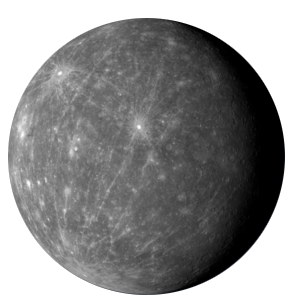

Mercurio

Mercurio es el planeta más cercano al Sol y es también el más pequeño de todos los 8 grandes planetas. Es un planeta sólido y rocoso y probablemente ha estado inactivo durante millones de años. Su superficie es muy similar a la del satélite natural de la Tierra pues presenta cráteres como resultado del impacto con meteoritos y cometas.
La atmósfera de Mercurio es sumamente delgada, es por ello que es tan fácil para los meteoros y asteroides acceder a la superficie e impactarse contra ella. Su “atmósfera” es en realidad una exosfera, compuesta mayormente por oxígeno, sodio, helio, hidrógeno y potasio y creada por efecto de los átomos despegados de la superficie y el impacto de los micrometeoritos.
Diámetro: 4879.4 km.
Masa: 3.3010 x 1023 kg.
Volumen: 60,827,208,742 km3.
Densidad: 5.427 g/cm3.
Temperatura superficial mínima/máxima: -173/427 °C.